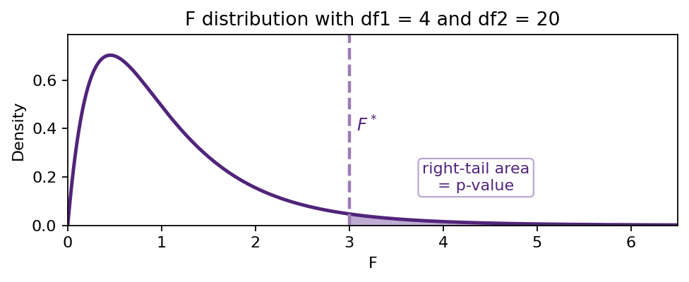

One-way ANOVA
Teaching demonstration: F distribution, One-Way ANOVA
Nishan Mudalige
ANOVA
- The F distribution
- One-way ANOVA
- Example (On some local UQ residents)
Theory first, followed by an illustrative data analysis.
Roadmap
Review
Review of inference and 2 sample \(t-\)tests.
F distribution
The theory and notation of the \(F\) distribution.
ANOVA One-factor model; decomposition of variation; an illustrative example.
Wrap up Wrap up and review, things to think about.
Review: populations, parameters and samples
Population and parameter
A population is every unit we want a conclusion about.
A parameter is a numerical characteristic describing the population, such as \(\mu\) or \(\sigma\).
Parameters are often unknown.
Sample and statistic
The sample is a subset of a population we actually measure.
A statistic is a numerical characteristic describing the sample, such as as \(\bar x\) or \(s\).
Statistics are measured and known.
Population
\(\mu,\ \sigma\)
Sample
\(\bar x,\ s,\ n\)
We sample from the population, then use the statistics to say something about the parameters.
A parameter is fixed but unknown; a statistic is known but random. The estimator \(\bar X\) is a random variable, while the estimate \(\bar x\) is the single number it takes for our data.
Two populations: Tests on a difference of two means
Population 1
\(\mu_1,\ \sigma_1\)
Sample 1
\(\bar x_1,\ s_1,\ n_1\)
Population 2
\(\mu_2,\ \sigma_2\)
Sample 2
\(\bar x_2,\ s_2,\ n_2\)
Model \(X_1,\dots,X_{n_1}\stackrel{\text{iid}}{\sim} N(\mu_1,\sigma_1^2)\);
\(Y_1,\dots,Y_{n_2}\stackrel{\text{iid}}{\sim} N(\mu_2,\sigma_2^2)\);
All independent.
Parameter of interest and statistical test \(H_0:\mu_1-\mu_2=0\)
\(H_a:\mu_1-\mu_2\neq 0\).
\(\mu_1-\mu_2\), estimated by \(\bar x_1-\bar x_2\).
The two-sample \(t\)-test
Unequal variances (Welch)
\[ T=\frac{\bar X-\bar Y}{\sqrt{\frac{S_1^2}{n_1}+\frac{S_2^2}{n_2}}} \ \stackrel{\text{approx}}{\sim}\ t_{\nu} \]
\[ \nu=\frac{\left(\frac{S_1^2}{n_1}+\frac{S_2^2}{n_2}\right)^2} {\frac{1}{n_1-1}\left(\frac{S_1^2}{n_1}\right)^2+\frac{1}{n_2-1}\left(\frac{S_2^2}{n_2}\right)^2} \]
Equal variances (pooled)
\[ T=\frac{\bar X-\bar Y}{S_p\sqrt{\frac{1}{n_1}+\frac{1}{n_2}}}\ \sim\ t_{n_1+n_2-2} \]
\[ S_p^2=\frac{(n_1-1)S_1^2+(n_2-1)S_2^2}{n_1+n_2-2} \]
\(S_p^2\) is the pooled standard deviation. It measures the the within-group variation into one estimate of a common \(\sigma^2\).
Remember this, we see a similar measurement in ANOVA, which is the mean square error (\(MSE\)).
Example: does caffeine raise pulse rate?
Change in pulse rate (bpm) for two independent groups.
| Group | \(n_i\) | \(\bar x_i\) | \(s_i^2\) |
|---|---|---|---|
| Caffeinated | 10 | 15.800 | 69.289 |
| Decaf | 10 | 5.100 | 31.211 |
Observed difference: \(\bar x_1-\bar x_2=10.7\) bpm.
Results
Welch: \(t=3.375\), \(\nu=15.74\), \(p=0.0020\).
Pooled: \(t=3.375\), \(\mathrm{df}=18\), \(p=0.0017\).
Strong evidence that \(\mu_1-\mu_2>0\).
Two populations need one test. With \(d\ge 3\) populations there are \(d(d-1)/2\) pairwise differences: the gap ANOVA fills.
The F distribution
The F-distribution is a family of continuous probability distributions named after R. A. Fisher.
Family notation
We write \(F(df_1,df_2)\).
Two degrees of freedom
\(df_1\): numerator df; \(df_2\) denominator df.
R functions
Use df(), pf(), qf(), and rf().
In ANOVA, the F distribution is the reference distribution for the ratio of the variation explained by a factor to the unexplained variation (MSF/MSE).
F distribution probability calculator
Why ANOVA?
Analysis of Variance (ANOVA) is used to compare several population means at once.
Factor and levels A factor is a categorical variable.
Its levels are the specific categories (or groups) within it.
Setting
ANOVA is appropriate to compare group means when there are \(d\ge 3\) groups or factor levels.
Global quesion Do all groups have the same population mean? \[ H_0:\mu_1=\mu_2=\cdots=\mu_d. \]
Why does the procedure change so much? Why not compare all pairs?
\[ \begin{array}{rcl} \mu_1 & = & \mu_2 \\ \mu_1 & = & \mu_3 \\ & \vdots & \\ \mu_1 & = & \mu_d \end{array} \qquad \begin{array}{rcl} \mu_2 & = & \mu_3 \\ & \vdots & \\ \mu_2 & = & \mu_d \\ \hfill\\ \end{array} \qquad \cdots \qquad \begin{array}{rcl} \mu_{d-1} & = & \mu_d\\ \hfill\\ \hfill\\ \hfill\\ \end{array} \]
- With 2 groups \(\longrightarrow\) only one difference between means to test.
- With 3 or more groups \(\longrightarrow\) multiple possible differences. Repeated \(t\)-tests increase the chance of false positives.
- ANOVA solves this by testing all group means together using between-group vs. within-group variation.
One-factor ANOVA model and notation
ANOVA (Analysis of Variance) compares several population means at once. Suppose we have \(d\) groups, with \(d \ge 3\).
The one-factor ANOVA model is
\[ Y_{ik}=\mu+\alpha_i+\epsilon_{ik}, \qquad \epsilon_{ik}\sim N(0,\sigma^2). \]
Equivalently,
\[ Y_{ik}=\mu_i+\epsilon_{ik}, \qquad \epsilon_{ik}\sim N(0,\sigma^2), \qquad \mu_i=\mu+\alpha_i. \]
- \(Y_{ik}\): response for observation \(k\) in group \(i\)
- \(\mu\): overall mean
- \(\alpha_i\): effect for group \(i\)
- \(\epsilon_{ik}\): random error
- \(\mu_i\): mean for group \(i\)
- \(\sigma^2\): common variance
The model assumes independent errors, approximate normality within groups, and a common variance across groups.
Sources of variation
| Group 1 | Group 2 | \(\cdots\) | Group \(d\) | |
|---|---|---|---|---|
| Observation 1 | \(Y_{11}\) | \(Y_{21}\) | \(\cdots\) | \(Y_{d1}\) |
| Observation 2 | \(Y_{12}\) | \(Y_{22}\) | \(\cdots\) | \(Y_{d2}\) |
| \(\vdots\) | \(\vdots\) | \(\vdots\) | \(\ddots\) | \(\vdots\) |
| Observation \(n_i\) | \(Y_{1n_1}\) | \(Y_{2n_2}\) | \(\cdots\) | \(Y_{dn_d}\) |
| Mean (of each group) | \(\bar Y_1\) | \(\bar Y_2\) | \(\cdots\) | \(\bar Y_d\) |
| Sample variance (of each group) | \(S_1^2\) | \(S_2^2\) | \(\cdots\) | \(S_d^2\) |
| Sample size (of each group) | \(n_1\) | \(n_2\) | \(\cdots\) | \(n_d\) |
Sample mean for each group \[ \hat{\mu}_i = \bar{Y}_{i} = \frac{1}{n_i} \sum_{k=1}^{n_i} Y_{ik}, \quad i=1 \ldots d \]
Sample variance of each group \[ {\hat{\sigma}_i}^{2} = {S_{i}}^2 = \frac{1}{n_i} \sum_{k=1}^{n_i} (Y_{ik} - \bar{Y}_{i})^2, \quad i=1 \ldots d \]
Total sample size \[ n=n_1+n_2+\cdots+n_d \]
Overall mean \[ \bar Y=\frac{1}{n}\sum_{i=1}^{d}\sum_{k=1}^{n_i}Y_{ik} =\frac{1}{n}\sum_{i=1}^{d}n_i\bar Y_i \]
Within groups: error variation \[ SSE=\sum_{i=1}^{d}(n_i-1)S_i^2 \]
Between groups: factor variation \[ SSF=\sum_{i=1}^{d}n_i(\bar Y_i-\bar Y)^2 \]
Total source of variation
\[ SST = SSF+SSE =\sum_{i=1}^{d}\sum_{k=1}^{n_i}(Y_{ik}-\bar Y)^2 \]
ANOVA table and hypothesis test
| Source | df | SS | MS | \(F\) |
|---|---|---|---|---|
| Factor | \(d-1\) | \(SSF\) | \(MSF=SSF/(d-1)\) | \(MSF/MSE\) |
| Error | \(n-d\) | \(SSE\) | \(MSE=SSE/(n-d)\) | |
| Total | \(n-1\) | \(SST\) |
Hypotheses
\[ \begin{aligned} H_0&:\mu_1=\mu_2=\cdots=\mu_d \\ H_a&:\text{at least one mean is different.} \end{aligned} \]
Test statistic and reference distribution
\[ F=\frac{MSF}{MSE}\sim F(d-1,n-d)\quad \text{under }H_0. \]
The p-value is a right-tail probability.

Illustration of a right-tail p-value for an \(F(4,20)\) curve.
P-value from the F distribution
For an observed ANOVA statistic \(F^*\),
\[ p\text{-value}=P\{F(d-1,n-d)\ge F^*\}. \]
Large values of \(F^*\) mean the between-level mean square is large relative to the within-level mean square, so ANOVA uses the right tail.
Illustrative example: Some famous residents at UQ

UQ Brush Turkeys, Alectura lathami (AI Generated image)
Summary
Study: Eiby and Booth (2009), Journal of Comparative Physiology B.
Researchers: Yvonne A. Eiby and David T. Booth, School of Biological Sciences, The University of Queensland.
Eggs came from brush-turkeys breeding on UQ’s St Lucia campus.
Note: the original data was not available. We reconstructed a representative dataset from the values published in Eiby and Booth (2009).
Research question and variables
Research question
Does incubation temperature affect the mean incubation period of Australian Brush-turkey eggs?
- 41 freshly laid eggs were collected from Brush-turkey mounds at UQ, St Lucia over three breeding seasons (2004–2007).
- Eggs were collected immediately after laying, measured, and randomly assigned to 32°C, 34°C, or 36°C incubation treatments.
- 28 eggs were included in the incubation-period ANOVA comparing the three temperature groups (determined by the degrees of freedom of the F statistic).
- These temperatures represent low, moderate, and high typical mound temperatures.
Factor levels
32°C, 34°C, 36°C.
Response
Incubation period in days.
Summary Statistics by Factor Level
| Group | \(n_i\) | \(\bar y_i\) | \(s_i^2\) |
|---|---|---|---|
| 32°C | 10 | 51.400 | 1.600 |
| 34°C | 10 | 46.700 | 1.567 |
| 36°C | 8 | 45.625 | 6.554 |
Note (Transparency): The data are reconstructed integer incubation periods that reproduce the published group means and standard deviations. The individual measurements for each egg used in this example are not the authors’ original observations.
First look: boxplots before the test
Before calculating the ANOVA table, compare the distributions visually. The Plotly boxplot shows boxes and whiskers only: no individual points and no zoom/cropping.
Hand calculation: summaries, sums of squares, and F statistic
Group summaries
| Group | \(n_i\) | \(\bar y_i\) | \(s_i^2\) | \(se_i\) |
|---|---|---|---|---|
| 32 °C | 10 | 51.400 | 1.600 | 0.400 |
| 34 °C | 10 | 46.700 | 1.567 | 0.396 |
| 36 °C | 8 | 45.625 | 6.554 | 0.905 |
\[ \bar y=\frac{10(51.400)+10(46.700)+8(45.625)}{28}=48.071. \]
Sums of squares
\[ \begin{aligned} SSE&=\sum_{i=1}^{3}(n_i-1)s_i^2 \\ &=9(1.600)+9(1.567)+7(6.554)=74.375, \end{aligned} \]
\[ \begin{aligned} SSF&=\sum_{i=1}^{3}n_i(\bar y_i-\bar y)^2 \\ &=10(51.400-48.071)^2+10(46.700-48.071)^2 \\ &\qquad +8(45.625-48.071)^2=177.482. \end{aligned} \]
\[ MSF=\frac{SSF}{d-1}=\frac{177.482}{2}=88.741, \qquad MSE=\frac{SSE}{n-d}=\frac{74.375}{25}=2.975 \]
\[ F^*=\frac{MSF}{MSE}=\frac{88.741}{2.975}=29.829. \]
Since \(d=3\) and \(n=28\), the reference distribution is \(F(2,25)\) under \(H_0\).
P-value and interpretation
\[ \begin{aligned} p\text{-value} &=P\{F(2,25)\ge 29.829\} \\ &=1-P\{F(2,25)\le 29.829\} \\ &\approx 0.000000239. \end{aligned} \]
Conclusion: The evidence suggests there is strong evidence against \(H_0\). The results of the ANOVA suggest the mean incubation period is not the same for all temperatures.
However, we should keep in mind we have relatively small sample sizes.
Same calculation in R: ANOVA table
Same calculation in R: p-value with plot
Is the equal-variance assumption satisfied?
Wrap up
- The F distribution gives the reference curve for a mean-square ratio.
- One-factor ANOVA compares several means with a single omnibus test.
- A good demonstration shows the hand calculation first, then verifies it in R.
- The brush-turkey example connects the method to a local UQ biological study.
Next time and some things to think about
- Work out another example to reinforce concept.
- If we reject the null hypothesis in ANOVA and determine at least one mean is different, which mean or means are different?
- Can you think of applications of ANOVA outside this example?
- Was the research conducted in the study ethical?
Post hoc comparisons in R
ANOVA tells us whether some mean differs. Tukey comparisons help identify the pairs.
Assumption and robustness checks
Teaching demonstration | One-way ANOVA